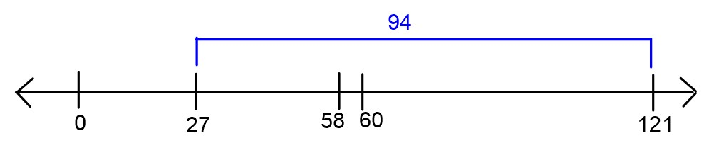
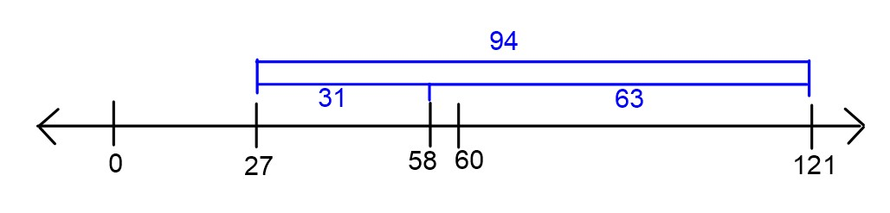
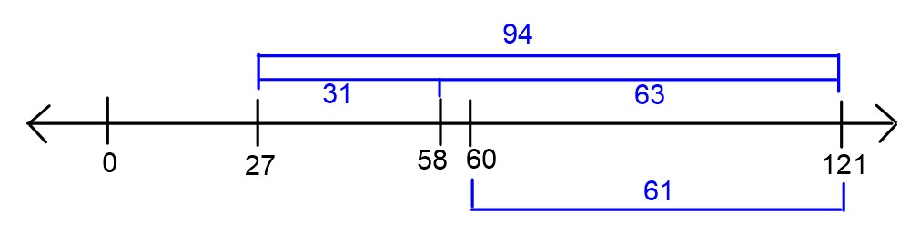

This exam was administered in person. The only allowed resource was a
provided reference sheet. Students had 50 minutes to
take this exam.
Problem 1
Originally Problem 1 on the first Midterm of Spring 2023
Consider a dataset such that 60 \leq y_1
\leq y_2 \leq \dots \leq y_n. Let R_{abs}(h) represent the mean absolute error
of a constant prediction h on this
dataset. Suppose we know that R_{abs}(27) =
94.
Problem 1.1
Find \bar y, or the mean of \{y_1, y_2, \dots, y_n\}.
There are several ways to do this problem. One way is to interpret
mean absolute error of a constant prediction h as the average distance of each data point
to h. So we are told that the average
distance of each data point to 27 is
94. That is, the data points are 94 units away from 27 on average. Since all the data is at least
60, they must be 94 units more than 27, or 121,
on average.

You can also arrive at the same answer algebraically using the
definition of R_{abs}(h). We have \begin{aligned} R_{abs}(h) &= \frac1n
\sum_{i=1}^{n}|y_i - h| \\ R_{abs}(27) &= \frac1n \sum_{i=1}^{n}|y_i
- 27| \\ &= \frac1n \sum_{i=1}^{n}(y_i - 27) \qquad \text{because
each~} y_i\geq 60 \\ &= \frac1n\left( \sum_{i=1}^{n}y_i -
\sum_{i=1}^{n}27\right) \\ &= \frac1n\left( n\cdot\bar y -
n\cdot27\right) \\ &= \bar y - 27 \end{aligned}
Since we are told that R(27) = 94,
we can set \bar y - 27 = 94, to find
that \bar y = 121.
Problem 1.2
Find R_{abs}(58).
Again, we can do this problem in multiple ways. Interpreting R_{abs}(h) as the average distance of each
data point to h, we can see that since
58 is 31 units closer to each data point than 27, R_{abs}(58) =
R_{abs}(27) - 31 = 94 - 31 = 63.
Another way to do this problem uses the answer from part (a). Since
the data points average to 121, their
distance to 58 is 121-58 = 63, on average.

Problem 1.3
Which of the following could be the mean absolute deviation
from the median for this dataset? There is only one correct answer.
18
62
94
102
One easy way to do this problem is to recognize that none of these
values are too low, but they may be too high. For example, the mean
absolute deviation from the median can be as low as 0, when all the data points are the same.
Since we are told there is only one correct answer and we know that no
answer choice is too low, that means the correct answer must be the
lowest option, 18.
We can also rule out all the other answer choices to show that they
are too high. To do that, we’ll show that 62 is too high, and therefore, both 94 and 102
are too high as well. We are told that all data points are at least
60. By similar logic as we used in part
(b), we can see that R_{abs}(60) = 61.
Since the minimum value of R_{abs}(h)
occurs at the median h^*\geq 60 and we
already know R_{abs}(60) = 61, it must
be the case that R(h^*) \leq 61.

Problem 2
Originally Problem 2 on the first Midterm of Spring 2023
Let R_{sq}(h) represent the mean
squared error of a constant prediction h for a given dataset. Find a dataset \{y_1, y_2\} such that the graph of R_{sq}(h) has its minimum at the point (7,16).
We’ve already learned that R_{sq}(h)
is minimized at the mean of the data, and the minimum value of R_sq(h) is the variance of the data. So we
need to provide a dataset of two points with a mean of 7 and a variance of 16. Recall that the variance is the average
squared distance of each data point to the mean. Since we want a
variance of 16, we can make each point
4 units away from the mean. Therefore,
our data set can be y_1 = 3, y_2 = 11.
In fact, this is the only solution.
A more calculative approach uses the formulas for mean and variance
and solves a system of two equations:
Originally Problem 3 on the first Midterm of Spring 2023
In general, the logarithm of a convex function is not convex. Give an
example of a function f(x) such that
f(x) is convex, but \log_{10}(f(x)) is not convex.
There are many correct answers to this question. Some simple answers
are f(x) = x and f(x) = x^2. The logarithms of these function
are \log_{10}(x) and 2\log_{10}(x), both of which are nonconvex
because there are pairs of points such that the line connecting them
goes below the function.
Problem 4
Originally Problem 4 on the first Midterm of Spring 2023
Suppose we are given a dataset of points \{(x_1, y_1), (x_2, y_2), \dots, (x_n, y_n)\}
and for some reason, we want to make predictions using a prediction rule
of the form H(x) = 17 + w_1x.
Problem 4.1
Write down an expression for the mean squared error of a prediction
rule of this form, as a function of the parameter w_1.
Minimize the function MSE(w_1) to
find the parameter w_1^* which defines
the optimal prediction rule H^*(x) = 17 +
w_1^*x. Show all your work and explain your steps.
To minimize a function of one variable, we need to take the
derivative, set it equal to zero, and solve. \begin{aligned} MSE(w_1) &= \dfrac1n
\displaystyle\sum_{i=1}^n (y_i - 17 - w_1x_i)^2 \\ MSE'(w_1) &=
\dfrac1n \displaystyle\sum_{i=1}^n -2x_i(y_i - 17 - w_1x_i)) \qquad
\text{using the chain rule} \\ 0 &= \dfrac1n
\displaystyle\sum_{i=1}^n -2x_i(y_i - 17) + \dfrac1n
\displaystyle\sum_{i=1}^n 2x_i^2w_1 \qquad \text{splitting up the sum}
\\ 0 &= \displaystyle\sum_{i=1}^n -x_i(y_i - 17)
+ \displaystyle\sum_{i=1}^n x_i^2w_1 \qquad \text{multiplying through
by } \frac{n}{2} \\ w_1 \displaystyle\sum_{i=1}^n x_i^2
&= \displaystyle\sum_{i=1}^n x_i(y_i - 17) \qquad
\text{rearranging terms and pulling out } w_1 \\ w_1 & =
\dfrac{\displaystyle\sum_{i=1}^n x_i(y_i -
17)}{\displaystyle\sum_{i=1}^n x_i^2} \end{aligned}
Problem 4.3
True or False: For an arbitrary dataset, the prediction rule H^*(x) = 17 + w_1^*x goes through the point
(\bar x, \bar y).
True
False
When we fit a prediction rule of the form H(x) = w_0+w_1x using simple linear
regression, the formula for the intercept w_0 is designed to make sure the regression
line passes through the point (\bar x, \bar
y). Here, we don’t have the freedom to control our intercept, as
it’s forced to be 17. This means we
can’t guarantee that the prediction rule H^*(x) = 17 + w_1^*x goes through the point
(\bar x, \bar y).
A simple example shows that this is the case. Consider the dataset
(-2, 0) and (2, 0). The point (\bar x, \bar y) is the origin, but the
prediction rule H^*(x) does not pass
through the origin because it has an intercept of 17.
Problem 4.4
True or False: For an arbitrary dataset, the mean squared error
associated with H^*(x) is greater than
or equal to the mean squared error associated with the regression
line.
True
False
The regression line is the prediction rule of the form H(x) = w_0+w_1x with the smallest mean
squared error (MSE). H^*(x) is one
example of a prediction rule of that form so unless it happens to be the
regression line itself, the regression line will have lower MSE because
it was designed to have the lowest possible MSE. This means the MSE
associated with H^*(x) is greater than
or equal to the MSE associated with the regression line.
Problem 5
Originally Problem 5 on the first Midterm of Spring 2023
Let X be a design matrix with 4
columns, such that the first column is a column of all 1’s. Let \vec{y} be an observation vector. Let \vec{w}^* = (X^TX)^{-1}X^T\vec{y}. We’ll name
the components of \vec{w}^* as
follows:
In this problem, we’ll consider various modifications to the design
matrix and see how they affect the solution to the normal equations.
Problem 5.1
Let X_a be the design matrix that
comes from interchanging the first two columns of X.
Let \vec{w_a}^* =
(X_a^TX_a)^{-1}X_a^T\vec{y}. Express the components \vec{w_a}^* in terms of w_0^*, w_1^*, w_2^*, and w_3^*, which were the components of \vec{w}^*.
Suppose our original prediction rule was of the form H(\vec{x}) = w_0 + w_1x^{(1)}+
w_2x^{(2)}+ w_3x^{(3)}. By swapping the first two columns of our
design matrix, this changes the prediction rule to be of the form H_2(\vec{x}) = v_0x^{(1)}+ v_1 +
v_2x^{(2)}+ v_3x^{(3)}. Therefore the optimal parameters for
H_2 are related to the optimal
parameters for H by \begin{aligned} v_0^* &= w_1^* \\ v_1^* &=
w_0^* \\ v_2^* &= w_2^* \\ v_3^* &= w_3^*
\end{aligned}
Intuitively, when we interchange two columns of our design matrix,
all that does is interchange the terms in the prediction rule, which
interchanges those weights in the parameter vector.
Problem 5.2
Let X_b be the design matrix that
comes from adding one to each entry of the first column
of X. Let \vec{w_b}^* =
(X_b^TX_b)^{-1}X_b^T\vec{y}. Express the components \vec{w_b}^* in terms of w_0^*, w_1^*, w_2^*, and w_3^*, which were the components of \vec{w}^*.
Suppose our original prediction rule was of the form H(\vec{x}) = w_0 + w_1x^{(1)}+
w_2x^{(2)}+ w_3x^{(3)}. By adding one to each entry of the first
column of the design matrix, we are changing the column of 1s to be a
column of 2s. This changes the prediction rule to be of the form H_2(\vec{x}) = v_0\cdot 2+ v_1x^{(1)} +
v_2x^{(2)}+ v_3x^{(3)}. Therefore the optimal parameters for
H_2 are related to the optimal
parameters for H by \begin{aligned} v_0^* &= \dfrac{w_0^*}{2} \\
v_1^* &= w_1^* \\ v_2^* &= w_2^* \\ v_3^* &= w_3^*
\end{aligned}
This is saying we just halve the intercept term. For example, imagine
fitting a line to data in \mathbb{R}^2
and finding that the best-fitting line is y=12+3x. If we had to write this in the form
y=v_0\cdot 2 + v_1x, we would find that
the best choice for v_0 is 6 and the best choice for v_1 is 3.
Problem 5.3
Let X_c be the design matrix that
comes from adding one to each entry of the third column
of X. Let \vec{w_c}^* =
(X_c^TX_c)^{-1}X_c^T\vec{y}. Express the components \vec{w_c}^* in terms of w_0^*, w_1^*, w_2^*, and w_3^*, which were the components of \vec{w}^*.
Suppose our original prediction rule was of the form H(\vec{x}) = w_0 + w_1x^{(1)}+
w_2x^{(2)}+ w_3x^{(3)}. By adding one to each entry of the third
column of the design matrix, this changes the prediction rule to be of
the form \begin{aligned} H_2(\vec{x}) &=
v_0+ v_1x^{(1)} + v_2(x^{(2)}+1)+ v_3x^{(3)} \\ &= (v_0+v_2)
v_1x^{(1)} + v_2x^{(2)}+ v_3x^{(3)} \end{aligned} Therefore the
optimal parameters for H_2 are related
to the optimal parameters for H by
\begin{aligned} v_0^* &= w_0^* - w_2^* \\
v_1^* &= w_1^* \\ v_2^* &= w_2^* \\ v_3^* &= w_3^*
\end{aligned}
One way to think about this is that if we replace x^{(2)} with x^{(2)}+1, then our predictions will increase
by the coefficient of x^{(2)}. In order
to keep our predictions the same, we would need to adjust our intercept
term by subtracting this same amount.
👋
Feedback: Find an error? Still confused? Have a suggestion?
Let us know
here.